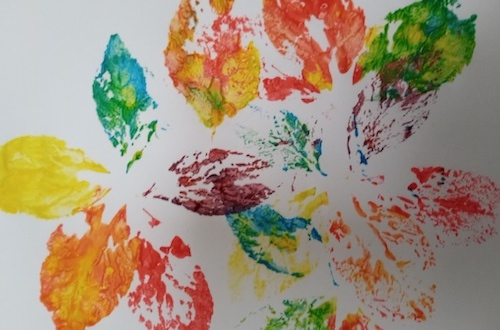

|  |
All children enjoy creating art and making things. It is only later, in adolescence, that many people "learn" that they have no talent for such things. Art is not only fun, it can sharpen our ability to see things, as any artist will tell you. |